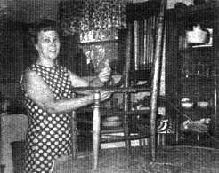
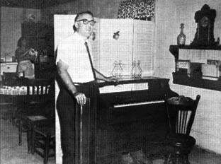

Building The Good Life
November/December 1970
For years I dreamed of a way to stay at home, be my own boss . . . and earn enough to adequately support my family. The several most unsatisfactory and unrewarding jobs I held during that period of time did much to inspire my desire for independence: I tried many forms of employment and-having never been satisfied with any of them and having never satisfied anyone else with them-I knew there must be a better way. Work, for me, was becoming more a "life sentence" than a job. However, in attempting to set myself free, I only became more enslaved by systems and people.
In my desperation, I considered all kinds of self-employment from raising rabbits to raising cain! . . . but the many "how to do" books didn't do for me. All the advertised home businesses required too much money and many of them-I later learned-were pure "con" outfits.
To cut the moorings and launch out into the deep, I knew, could only come through some original effort on my part. Going against the tide and being an up-the-streamer would cost . . . but the loss of my freedom was costing even more. My life would have been different, I'm sure, if only I had had the "herd instinct" . . . but when you can't join the ranks of the rat race-or beat it either-then you just have to be a lone rancher.
In 1961 I gave up teaching school (it was giving my ulcers ulcers) and started working door to door as a Rawleigh Products salesman. Although my parents thought this was a disgrace for a man with a Bachelor of Fine Arts degree, I enjoyed selling fairly well. At that time, it was the living in the same house with my parents that was beginning to really bug me. Since we were right in the center of town my two little boys didn't have much yard to play in. I wanted my own house as dearly as I wanted to be my own boss. I was only one step from Clay County over these two goals!
Then a nice lot just outside the city limits was offered for sale. The price was $1250 and I didn't have the full amount but I was determined to buy that lot and pay cash for it. The property especially appealed to me because it had no building code to worry about. Taking the money I had on hand-and getting my mother to go on a bank note for the balance-I purchased the lot and took possession. I wasn't letting any grass grow under my feet.
Then came the major problem of building a house. A mortgage was definitely out: We would build our own home somehow. There would be a way if I had to make one out of no way. Money, naturally, was still the number one mountain to scale: I was paying off the note at the bank, making car payments and doing my best to survive the money changers.
It was six months before we could start on the house. Finally I had a man with proper tools lay off the foundation and I dug ditches for the concrete footing. Next, Solite blocks were ordered (along with some reasonable brick masons) and we lifted the walls up to floor level. Then . . . nothing happened on the little house for many months. It's no sin to be poor: Just terribly inconvenient!
At last my father-in-law presented us with a check for $500.00 and the walls went up to the roof. I was wonderfully blessed in locating some used, heart pine lumber from an old house being torn down nearby and my father-in-law, a friend and I used the wood for an A-roof.
A neighbor (who volunteered his services and wouldn't accept any pay) and I wired the house for about $65.00 and two men dug a well with a hand auger (see YOU CAN DRIVE YOUR OWN WELL, MOTHER NO. 4) for $60.00. The plumbing was the final hurdle and we solved that problem by letting Montgomery Ward do the job for $715.00 payable over the next two years.
On June 14, 1962 we borrowed my father-in-law's red Ford truck and, with much excitement, moved into our new home. The total cost was just a little over $3,000 and we paid that off during the next three years by using notes at the bank. There was never a mortgage on the property and there never will be!
In passing, I'd like to point out that some items-usually regarded as luxuries-can not only be enjoyed on a limited budget . . . but can also go a long way in helping to stretch that budget. We built a nice fireplace into our house and the whole family loves the open fire and finds it very relaxing. An added bonus, since wood has always been freely available in our area, is the good deal of money the fireplace has saved on our fuel bill.
We soon found that-even with a house to our good-we still hadn't quite mastered our own lives. There always seemed to be urgent bills to pay and we were constantly in need of some additional income. One day my wife- Lou-feeling the money strain said, "I wish there were something I could stay at home and do to bring in a little extra money."
I seriously began to think about Lou's comment. I knew she was very good at sewing and handwork and I had often heard her say she wanted to learn to weave. Somehow, thinking about Lou's artistic and creative yearnings, brought back memories of my own desires as a child: I had always wanted to learn to play the piano. At the time I wondered what childhood longings could possibly have to do with the problem at hand. A few months later I would see the connection.
Once I had again started thinking about a piano, I couldn't get it out of my mind and I asked the little wife what she thought of my getting an old upright for $100.00. "NO!" she said, "there's no room for a big, old piano in our small living room." I knew she was right . . . but her refusal still made me mad! And, lucky for us, my getting mad at this point ignited a series of events that completely revolutionized our lives.
"Ok," I thought, "if I can't have a piano, how about one of those old-fashioned, parlor organs that you have to pedal with your feet. It won't take up nearly as much space as a piano."
Once my wife had agreed to the organ idea I began a three-month search for one. Finally, an old gentleman gave me a tip that led me to an oak organ out in the country. The owner sold it to me for just $5.00.
Again borrowing the red Ford truck, I brought the organ home and placed it in the middle of the living room floor. I was so excited I couldn't think about going to bed and, late that night, I began to take it apart. I just had to see what made it work!
At 4 o'clock the next morning everything was an oblong blur, I was exhausted and I went to bed. Lou, rising early, saw nothing but organ parts scattered all over the living room. "He's ruined it," she said, "he'll never get it back together again."
Well, it did take me quite a few months to restore that organ, but only because I was learning the art of organ rebuilding well.
I first refinished the case before tackling the bellows and inside work. We had heard somebody say that household ammonia would take the old varnish finish off antiques so I got a half-gallon at the A & P for 35 cents . . . and found it to be a cheap source of paint remover. I also found that boiled linseed oil will darken wood and bleach will lighten it; chewing tobacco makes a pretty good stain and a beautiful stain can be made by putting green walnuts in a gallon plastic container and pouring ammonia over them.
As I was learning these tricks of the trade, friends and neighbors-who saw how well the refinished organ looked-kept asking us to do little refinishing jobs for them. I began to see we could earn extra money with antiques and refinishing and, besides, I really enjoyed this work that could be done with very little equipment out in the fresh air and sunshine.
To increase business, I decided to invest $3.85 for a ten word ad in the classified section of the local newspaper. We didn't have a telephone at that time so I gave my mother's number and asked her to handle the calls for me. She did and, much to my delight, the business began coming in.
My wife had made me mad and started a career for me . . . now it was my turn to start one for her.
One day an elderly man drove up with an oak chair to be refinished. The chair's old cane bottom needed redoing and he asked if we did that kind of work. "Oh yes," I said, "my wife can do anything."
The man left the chair. I carried it in to Lou, set it down and announced that she had to cane it. She announced right back that she couldn't . . . and, furthermore, she wouldn't cane it. So I reminded Lou of her earlier wish about making money at home and realizing the opportunity-she agreed to learn the ancient art of caning.
An antique dealer had given us a Home Demonstration Club instruction sheet which Lou studied carefully. The seven steps in caning were Greek to me but she seemed to understand what it was all about. We ordered a hank of cane and the first chair was begun and completed. We were in the caning business.
Later, Lou took a rush chair, turned it upside down, looked at it and started doing rush bottoms. An old craftsman helped her master split bottoming.
When the message got around as to what we could do, we were well on our way to doing it. My refinishing business picked up and the boys, Jonathan and Joel, helped me with it. Their mother taught them how to do caning and split bottoms and they helped her too.
Our caning, rushing, refinishing and organ rebuilding had now become well established so I decided to give up the Rawleigh products and settle down to the new business at home. I continued to run the newspaper ad from time to time and it always seemed to work. Besides that, our patrons were advertising for us and this word of mouth publicity was really the most effective. Our business was generally good but, sometimes in the year, we would have a slump. We needed more exposure.
Realizing the power of television, I had a brain storm. I wrote to the hostess of a local television show and offered my services free in exchange for a chance to display my organ work. She immediately phoned and extended an invitation to appear.
A year or so later, I did the same thing with another TV personality on a station in Durham, North Carolina. This time the whole family was invited and we demonstrated our various abilities. When we arrived back home we were greeted by several long distance calls for information about our work. Many of our friends considered us very important to be invited on television. Little did they know that I had engineered the whole thing!
Then another wonderful opportunity came to us. A distant relative connected with a local Arts and Crafts Fair invited us to participate in a show at the mall of a large shopping center. This was just the exposure that could put us on the map.
We were advised to have business cards to give to passers-by so I went to a print shop and ordered a rubber stamp made.
Words can't express what this little stamp did for our business that first year in the fair. A card, stamped in red ink (to make the information really stand out) proved to be an eyecatcher and, after four years of giving away cards at the show in the mall, we're getting business from Washington, D.C., the eastern shore of Maryland and many other Atlantic coast states.
Our primitive crafts have certainly come alive. To date, my wife has done over a thousand chairs, I have rebuilt the bellows of 158 organs . . . and they still keep coming.
Almost all we know about our skills is completely self-taught. The home business-after five years-appears to be well established. We're completely out of debt and we hope to save a little money at last. It's especially satisfying to feel our present degree of independence. At times our work load even gets so demanding that we have to turn down business: The telephone rings so much some days that we're forced to take it off the hook.
Little did we realize that our childhood dreams could do so much for us. Not only did I learn to rebuild the Reed organ but I was able to teach myself-with simple beginner books-to play the instrument. I've now performed on two television programs and played and spoke on the subject to many women's clubs . . . all without ever having had a professional lesson. In addition, the family now owns 24 of these beautiful old antique organs which I mostly picked up for five and ten dollars apiece.
One good thing just seems to lead to another. About a year ago I started wood carving as a hobby. It all began because of the organs. Many of them are hand carved with rosettes and beautiful designs so I figured I could do simple animals, letter openers and things like that. Then, last Christmas, people started popping in and buying them and a whole new business is opening up.
We've found our home business to be more than we ever expected and it's wonderful to know that "we can't be fired `cause we've never been hired." It took a lot of self-discipline to make a way out of no way . . . yet and still, we feel much more secure in our set-up than we ever could with a job. If we get tired, we take a nap; when we want to go fishing or camping, we go.
Of course, we can't say that our lot has been entirely a bed of roses or a cross of sunshine. We've had some hard days like many of our peers but I doubt we could stop our way of life now if we wanted to. It's extremely satisfying when visitors come long miles to see our organs and other work. To be happy in one's work is the real test.
I've been able to give my family more of myself and my philosophy of life during the past five years. When I was teaching school and holding down a job I couldn't be relaxed enough to really communicate with them. I can only wonder what would have happened to my central nervous system if I had stayed in the classroom chained to a system which so many teachers-who love to teach-hate.
We've found such joy in our work and have been so honored by it that we sincerely long to see others launch out into the deep where the fishing is good. We're committed to encouraging all arts and crafts around and about us.
If you're interested in learning caning just write to Edward P. Demarest, P.O. Box 351, Sussex, N. J. 07461. He will be glad to send you a free instruction sheet and prices on caning materials. Your library is a fine source for books on rush work and split-bottoming and the librarian can order books on these subjects if necessary.
Refinishing can be done with very little equipment and know-how. Experience is the best teacher and you'll pick up many little tricks as you go along. I've found, for instance, that box lye-cost, 25 cents a can-will make a gallon of paint remover when mixed with water (always neutralize with an application of vinegar to prevent damage to the wood). I use this mixture to take five or more coats of paint off old chairs.
A very practical refinishing solution can be made by thinning shellac half-and-half with denatured alcohol. If you wipe this solution into wood with an old nylon stocking (a trick I learned from an antique dealer), you'll have a beautiful hand-rubbed finish. Twenty coats can be put on a chair in just an hour.
Your library can, again, be a good source of other refinishing information.
If carving-the most ancient of all the arts-interests you then just get a utility knife (like they use in grocery stores to open cardboard boxes) and start carving. I never buy any wood because there is always an abundant free supply.
You can carve letter openers from the slats on the ends of grape crates. Melon boxes furnish enough wood for small animals. I like to carve larger cats so I go to the mills around here, get big crates and cut between the nails of the 2 x 4's. Taking a piece of 2 X 4 six inches long, I drill a hole in the top and proceed to carve out the cat. The hole makes a holder for pens and pencils.
A very good income can be realized by visiting every trash and dump pile you can find. In such places, I constantly find valuable chairs, brassware, glassware, old iron items and many, many other treasures.
I can't emphasize strongly enough the extra money we make on things found at the city dump. Many of the antiques in our house were picked up there. I once found a very valuable round oak table in the dump . . . not to mention an oak dresser, the oak case of a pipe organ, two ladder back slipper chairs, an iron kettle, a pair of andirons and some much soughtafter blue clamp-top canning jars. These are only 1 few of my great finds. Many people will also give you all the stuff in the attic if you'll just haul it away. I've been in more attics than a thief.
On Sunday afternoons, the family goes out for a walk. We observe wildlife, dig sassafras root and have a good time. As we meander we pick up pop bottles, put them in a big supermarket bag and bring them home.
The bottles are stored in crates (easily obtained from the supermarket) and-every six months or so-I take them to the bottling companies and collect the 2 cents deposit. The take is usually about $10.00. That's $70.00 a year for helping to clean up the landscape, keeping the heart young and taking off extra pounds.
Two years ago we started gardening organically as real "homesteaders". This summer we canned and froze over fifty quarts of tomatoes and the freezer is full of corn; beans, squash, pumpkins, okra and apples.
We're trying to learn everything there is to know about living off the land and we're particularly interested in free wild foods and preserving by sun drying. We're simple people, wanting the simple life.
I've had the most fun telling "you all" about our home business and way of life. As a matter of fact-since starting our work here-I've thought of several other home occupations but I'll save those for another time.
For now, do write and let me know what you're up to. I like to get mail (it makes me feel important). And the welcome mat is always out: When you're down this way, do stop by. Peace.
DON MELVIN
1352 BENVENUE RD.
ROCKY MOUNT, N. C. 27841
Caning, Rush & Refinishing
Telephone 442-8448
 Above: Don Melvin points out the innards of one of the organs he has rebuilt. Note the cane and rush-bottomed chairs in the background and the round oak table the Melvins found in a dump. Impression from simple but effective rubber stamp that boosted the Melvin home enterprises. |
 |
 |